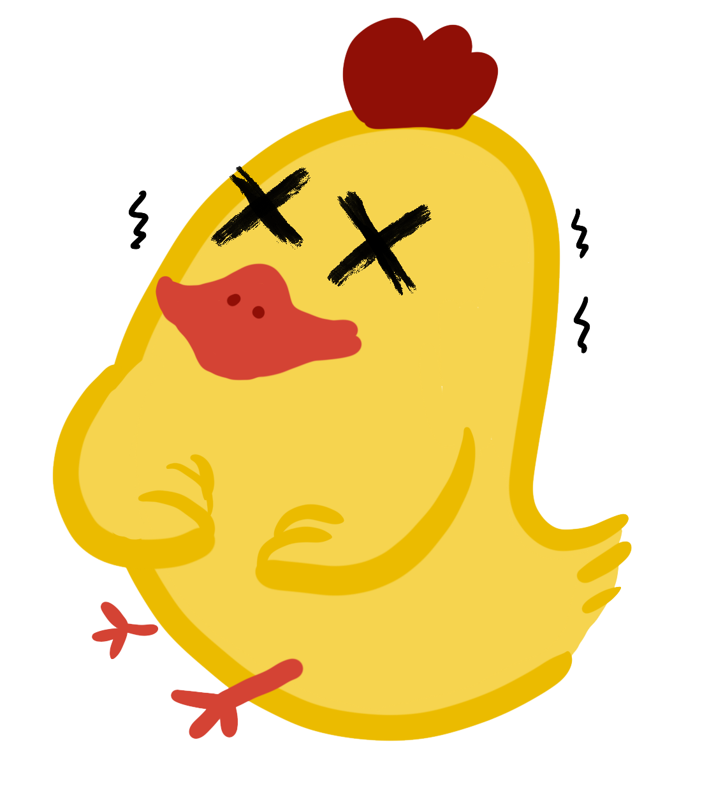

Background
Antibiotic Resistance -- A Mutual Challenge for Human
Antibiotics play an indispensable role in human health and development of animal husbandry in the history of fighting against microbial infections. However, in recent years, the overuse of antibiotic has led to an increase in anti-microbial resistance (AMR), transmission of anti-microbial resistance genes（AMRG） ,and emergence of super-bacteria on society, which has aroused worldwide concern. If nothing is done to reverse the trend, the annual toll caused by AMR will climb to 10 million deaths in the next 35 years,and US $100 trillion will be spent by 2050.[1]

One of the most serious challenges is to reduce the use of antibiotics as animal husbandry growth promoters. According to statistics, the global consumption of antibiotics for animal feed was about 63,151 tons in 2010, China accounting for 23% of the total. According to the representative of FAO in China, the government of China has restricted the use of specific antibiotics in animal husbandry. Still，given the current situation of domestic productivity, lack of access to registered veterinary prescriptions, farmers in poverty-stricken rural areas rely on antibiotics to control animal disease and secure income.[2]
Tetracycline abuse in animal husbandry —— Resistance of pathogen to tetracycline was enhanced
Tetracycline,as broad-spectrum antibiotic,are widely used as animal growth-promoting additives. After the tet gene, which is widely distributed in bacteria, is expressed, resistance against tetracycline can be obtained through ribosome protection, efflux pump and inactivation of enzyme.[3] At present, in the light of the increase in drug resistance ,and the emergence of new resistance as a result of search for new antibiotics, measures to control tetracycline-resistant pathogenic bacteria mainly focus on new feed antibiotic substitutes including antimicrobial peptides, lysozyme, Chinese herbal medicine ,etc. In recent years, bacteriocins and toxins for different pathogenic bacteria have become research focus of the substitute of antibiotics because of their high intensity of targeting and bactericidal effect, the potential toxicity to host bacteria restricts the efficient expression by genetic engineering and makes industrious production difficult.[4-6]
The infection of drug-resistant Salmonella becomes the most difficult problem in Chinese chicken breeding industry
Salmonellosis is one of the most common and widespread foodborne diseases, of which some serotypes are zoonosis. About 93.8 million people are infected worldwide each year, of which 80.3 million are food borne and can cause 155,000 deaths. In WHO-GFN, Salmonella is listed as one of the food-borne pathogens with significant harm in the world.[7]Globally, Salmonella is the major pathogenic bacteria in poultry, which has multiple drug resistance and can be transmitted through eggs, processed products, faeces and soil, causing great loss to human health and ecological environment.
European and American countries have strict laws and regulations on the control of Salmonellosis, including improving feed formula and not using animal-derived feed products, the feed is acidified or heat-treated to reduce the presence of Salmonella in the feed and to create an acidic environment in the digestive tract to inhibit its growth.Plus, substandard agricultural products are destroyed. However, it is difficult to overcome the defects of acid-fast gene expression and the inability of phytic acid to be broken down in the digestive tract. In addition, policies for developing countries are not yet mature and the destruction of products makes it difficult to guarantee food supplies. Therefore, alternative feed antibiotics become the best choice, microbial preparation is one of the representatives.[8,9]
oxin-antitoxin system is a widely existing mechanism in bacteria, and its function to bacteria is to protect the integrity of genetic material in the process of transmission or to improve the tolerance of bacteria under adversity. But each kind of toxin can only be combined by its corresponding antitoxin specificity, so using this characteristic of the system, finding the corresponding antitoxin toxin does not exist in the harmful bacteria is a method of killing bacteria. OrtT, a newly discovered type V toxin, is an orphan toxin (without an antitoxin) that kills bacteria by destroying their cell membranes and reducing their ATP levels, making it possible to specifically kill Salmonella.[10]
This year, our IGEM project decided to address the problem of Salmonella infection in chicken farming by designing a new drug to kill tet-resistant Salmonella in chickens infected.